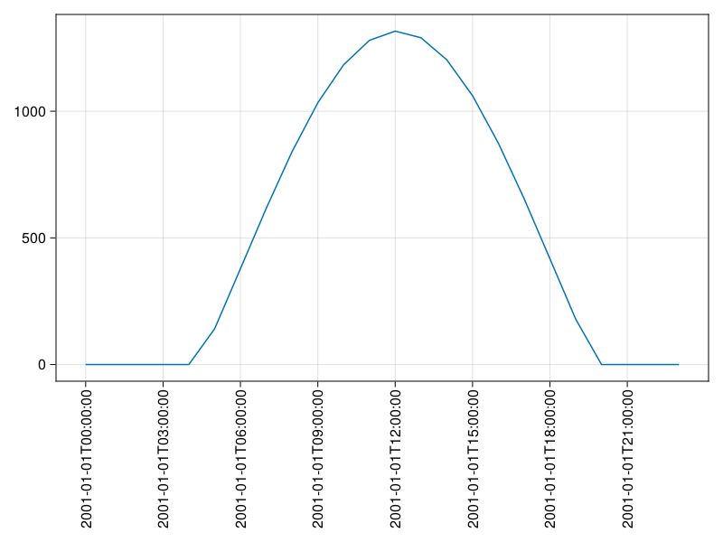

Quickstart¤
Reading a file¤
The most common task is probably to just read a NetCDF file into memory. This is done with:
ncread(filename, varname)
This reads the whole variable into memory and returns it as a Julia array. To read only a slice of a NetCDF file, there are optional start and count keyword arguments, where one can specify the starting index and count along each dimension.
Example¤
In this example we show how to create a NetCDF file from scratch, write some data to it and read it back in afterwards. First of all we create an array with top-of the atmosphere radiation data:
using NetCDF
include(joinpath(dirname(pathof(NetCDF)), "../docs/scripts/guide/toa.jl"))
g_pot (generic function with 1 method)
Define longitudes and latitudes, day and timesteps
lat = -89.5:89.5
lon = -179.5:179.5
day = 1
tempo = 0:23;
Create radiation array¤
rad = [g_pot(la, lo, day, t) for lo in lon, la in lat, t in tempo];
The resulting array is a 3-dimensional array with dimensions lon-lat-time, resembling approximately the hourly top of atmosphere radiation on January 1st. For documentation purposes we want to add atributes to the variable as well as the dimensions. Throughout this package, attributes are represented Dict{String}s:
add atributes¤
varatts = Dict("longname" => "Radiation at the top of the atmosphere",
"units" => "W/m^2")
lonatts = Dict("longname" => "Longitude",
"units" => "degrees east")
latatts = Dict("longname" => "Latitude",
"units" => "degrees north")
timatts = Dict("longname" => "Time",
"units" => "hours since 01-01-2000 00:00:00");
Now we have all the meta-information ready to create the actual file.
save file¤
fn = "radiation.nc"
isfile(fn) && rm(fn) # clear create
nccreate(fn, "rad",
"lon", lon, lonatts,
"lat", lat, latatts,
"time", tempo, timatts,
atts=varatts);
Once the file is created we can write the actual data to it:
ncwrite(rad, fn, "rad")
ncinfo¤
Now we assume we just retrieved this radiation NetCDF file and want to get some information about it. This is done using ncinfo:
ncinfo(fn)
##### NetCDF File #####
/home/runner/work/NetCDF.jl/NetCDF.jl/docs/docs/scripts/generated/guide/radiation.nc
##### Dimensions #####
Name Length
--------------------------------------------------------------------------------
lat 180
time 24
lon 360
##### Variables #####
Name Type Dimensions
--------------------------------------------------------------------------------
lat DOUBLE lat
time INT64 time
lon DOUBLE lon
rad DOUBLE lon lat time
##### Attributes #####
Variable Name Value
--------------------------------------------------------------------------------
lat units degrees north
lat longname Latitude
time units hours since 01-01-2000 00:00:00
time longname Time
lon units degrees east
lon longname Longitude
rad units W/m^2
rad longname Radiation at the top of the atmosphere
Here we learn the most important information about the file, which variables it contains, the variable dimensions and their attributes. We decide to read the radiation variable:
x = ncread(fn,"rad");
size(x)
(360, 180, 24)
slicing¤
This reads the whole array at once. If we only want to read a certain part of the variable, for example if we only want to plot the time series at a certain location, we can use the start and count keywords:
ts = ncread(fn, "rad", start=[180,45,1], count=[1,1,-1])
1×1×24 Array{Float64, 3}:
[:, :, 1] =
0.0
[:, :, 2] =
0.0
[:, :, 3] =
0.0
;;; …
[:, :, 22] =
0.0
[:, :, 23] =
0.0
[:, :, 24] =
0.0
time series plot¤
In order to correctly label the time steps we retrieve the time information from the file:
using Dates
tvec = DateTime(2001,1,1) + Hour.(ncread(fn,"time"))
24-element Vector{Dates.DateTime}:
2001-01-01T00:00:00
2001-01-01T01:00:00
2001-01-01T02:00:00
2001-01-01T03:00:00
2001-01-01T04:00:00
2001-01-01T05:00:00
2001-01-01T06:00:00
2001-01-01T07:00:00
2001-01-01T08:00:00
2001-01-01T09:00:00
⋮
2001-01-01T15:00:00
2001-01-01T16:00:00
2001-01-01T17:00:00
2001-01-01T18:00:00
2001-01-01T19:00:00
2001-01-01T20:00:00
2001-01-01T21:00:00
2001-01-01T22:00:00
2001-01-01T23:00:00
Now we can generate the plot:
using CairoMakie
manual time ticks
tempo = string.(tvec)
lentime = length(tempo)
slice_dates = range(1, lentime, step=lentime ÷ 8)
1:3:22
the actual plot
fig, ax, obj = lines(1:length(tvec), ts[1,1,:])
ax.xticks = (slice_dates, tempo[slice_dates])
ax.xticklabelrotation = π / 2
ax.xticklabelalign = (:right, :center)
fig

Heatmap plot¤
Another example would be to generate a heatmap plot of the solar radiation at 12am UTC:
lons = ncread(fn, "lon")
lats = ncread(fn, "lat")
m = ncread(fn, "rad", start=[1,1,12], count=[-1,-1,1]);
heatmap(lons, lats, m[:,:,1]; colormap = :plasma,
axis = (; xlabel = "lon", ylabel = "lat"))
This page was generated using Literate.jl.